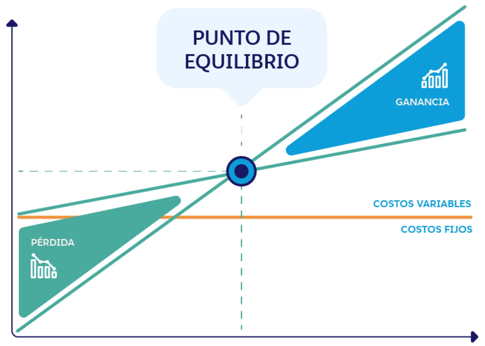

El punto de equilibrio, también conocido como break-even point, es el nivel de ventas o ingresos que una empresa necesita alcanzar para cubrir todos sus costos, tanto fijos como variables. En ese punto, la empresa no genera ni pérdidas ni ganancias.
*
Es una herramienta clave para la planificación financiera y la toma de decisiones empresariales, ya que permite determinar:
El nivel de ventas necesario para cubrir todos los costos.
La rentabilidad de un producto o servicio.
El impacto de cambios en los costos o precios en la rentabilidad de la empresa.
Si la empresa está operando con rentabilidad o no.
